Oct 2026 – Present
Web Developer
Danggit PH
Developing and architecting CMS framework for a website with high-volume content updates.

Design, development, and leadership roles that have shaped how I create and collaborate.
Oct 2026 – Present
Danggit PH
Developing and architecting CMS framework for a website with high-volume content updates.
Oct 2026 – Present
FlyRank AI
Developing, optimizing, and learning AI-powered responsive websites using Tailwind and React.
Oct 2026 – Present
Google Developer Groups on Campus PUP
Facilitating design workshops, learning sessions, critiques, and practical activities that encourage continuous creative and technical development.
Oct 2026 – Present
ARK PUP - AcademiTech Research and Knowledge
Leads and oversees the creative direction of all publishing materials and media outputs.
Mar 2026 – Present
PUP College of Computer and Information Sciences Student Council
Led conceptualization and execution of event visual materials, brand identities, and digital marketing campaigns.
Nov 2025 – Oct 2026
Purpose Pinoy
Directed the web infrastructure, CI/CD pipelines, SSL lifecycles, and high-availability domain setup on Cloudflare.
Oct 2025 – Sep 2026
AWS Cloud Club PUP
Designed 10+ marketing materials, layout decks, and visual collateral to promote student cloud computing campaigns.
Nov 2025 – Sep 2026
Google Developer Groups on Campus PUP
UI/UX member learning design sprints and design system explorations.
Sep 2024 – Oct 2025
Microsoft Campus Club - PUP
Project Management Committee lead overseeing risk registers and milestone audits.
Oct 2024 – Sep 2025
AWS Cloud Club PUP
Skill Builder Committee web developer engaged in front-end hands-on training sessions.
Sep 2023 – May 2024
QUASAR
Pioneered and co-founded the first Senior High School organization at Manuel Luis Quezon High School.